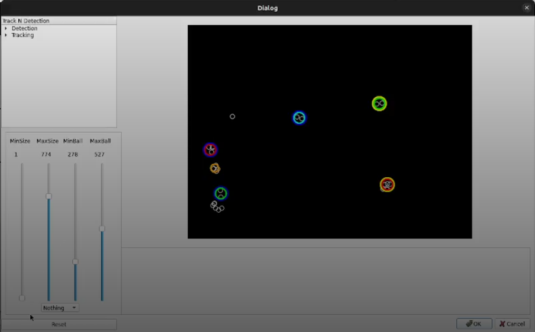

3.Color Configuration Guide – Titans-VISION
Overview
This document provides a step-by-step guide to configuring the Titans-VISION system for optimal object detection and tracking. It covers how to fine-tune color segmentation, adjust object detection size filters, and verify accurate tracking of robots and the ball on the field.
1. Starting the Vision System
After launching Titans-VISION, activate Field Capture Mode. At the bottom of the camera preview, change the image mode from Original to Segmented.
I

This allows you to view only the elements detected by the vision system (robots and ball), filtering out unnecessary data or image noise.
üéØ Goal: Only robots and the ball should appear in the segmented view, with minimal false positives.
2. Opening the Color Segmentation Tool
Navigate to the menu bar and click on MagicVision.
After this open the Segmented tab, where you'll configure how the system interprets colors and detects "blobs" (visual representations of objects).

3. Entity Detection Configuration
On the right side of the screen, under Entities, you can set how many objects the system should detect — such as the ball and the robots (in the example image, 7 entities). Below that, you’ll see options to fine-tune which objects should or shouldn't be detected.
The objective is for the system to detect all the tags and robots as accurately as possible. Keep in mind: these settings vary depending on the lighting conditions and the specific field setup, so they must be adjusted early on.
-
Click Apply under Entities to preview the new configuration.
-
Click OK (green arrow) to save.
4. Using the Vectorscope (Advanced Color Tuning)
If the system is misidentifying colors like in the previous image (e.g., confusing light blue with green), go to the Details tab and enable the Vectorscope below the screen.
This will display a color spectrum graph where each line corresponds to a detected color.

You’ll see several white points appear — these represent the colors the system is detecting. Each line in the graph corresponds to one detected color.
To find out which color a line represents, right-click on the line. On the side panel, the corresponding color will be highlighted:
You can drag and reposition these lines to change how the system interprets each color. For example, if you swap the orange and green lines, the system will show the ball as green in the segmented tab. This is useful when the system has difficulty detecting specific colors correctly.
5. Adjusting Blob Size Filters
Still in the initial camera tab, aside from Original and Segmented, there’s also a Tracked mode, which shows the objects the camera is currently tracking:

To configure the minimum and maximum size of objects (blobs) the system should consider valid:
- Click the settings button to open the configuration menu.
- In the new window, click on the Calibrate Tracking button.
This will open another tab where you can set the minimum and maximum size of blobs that the system should interpret as valid objects. Once you’re done, click OK to save the settings.

6. Validation
Return to the Segmented or Tracked view and verify that:
-
All robots and the ball are detected correctly.
-
No false objects are being captured.
-
Tracking is consistent as objects move.
Adjust parameters as needed to improve performance, especially when field conditions change (e.g., different lighting or backgrounds).